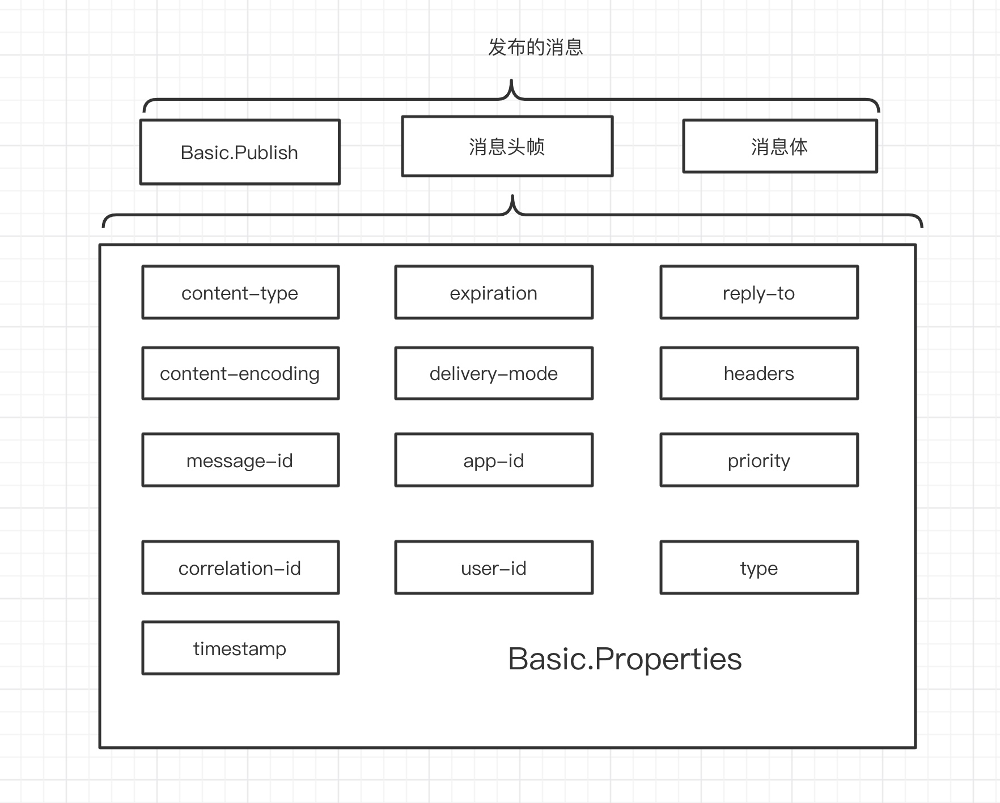
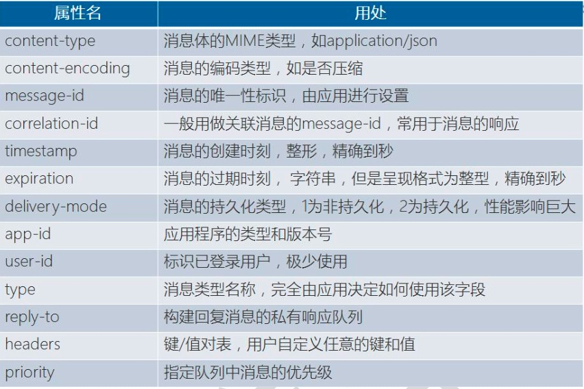

RabbitMQ 中消费行为主要跟队列有直接关系，那么我们接下来深入的分析队列。
临时队列
临时队列对应的是没有持久化的队列，也就是如果 RabbitMQ 服务器重启，那么这些队列就不会存在，所以我们称之为临时队列。
自动删除队列
自动删除队列和普通队列在使用上没有什么区别，唯一的区别是，当消费者断开连接时，队列将会被删除。
自动删除队列允许的消费者没有限制， 也就是说当这个队列上最后一个消费者断开连接才会执行删除。
自动删除队列只需要在声明队列时，设置属性 auto-delete 标识为 true 即可
单消费者队列
普通队列允许的消费者没有限制，多个消费者绑定到多个队列时，RabbitMQ 会采用轮询进行投递。如果需要消费者独占队列，在队列创建的时候， 设定属性参数exclusive 为 true。
自动过期队列
指队列在超过一定时间没使用，队列会从 RabbitMQ 中被删除。
什么是没使用?
- 一定时间内没有 Get 操作发生。
- 没有 Consumer 连接在队列上
就算一直有消息进入队列，也不算队列在被使用。 通过声明队列时，设定x-expires 参数即可，单位毫秒。
队列的持久性
持久化队列和非持久化队列的区别是，持久化队列会被保存在磁盘中，固定并持久的存储，当 RabbitMQ 服务重启后，该队列会保持原来的状态在 RabbitMQ 中被管理，而非持久化队列不会被保存在磁盘中，RabbitMQ 服务重启后队列就会消失。
队列级别消息过期
就是为每个队列设置消息的超时时间。只要给队列设置 x-message-ttl 参数，就设定了该队列所有消息的存活时间，时间单位是毫秒。如果声明队列时指定了死信交换器，则过期消息会成为死信消息。
队列参数列表
| 参数 |
目的 |
| x-dead-letter-exchange |
死信交换机 |
| x-dead-letter-routing-key |
死信消息的可选路由键 |
| x-expires |
队列在指定毫秒数后被删除 |
| x-ha-policy |
创建 HA 队列 |
| x-ha-nodes |
HA 队列的分布节点 |
| x-max-length |
队列的最大消息条数 |
| x-max-length-bytes |
消息的最大总量 |
| x-message-ttl |
毫秒为单位的消息过期时间，队列级别 |
| x-max-prority |
最大优先值为255的队列优先排序功能 |
消息的属性
按照 AMQP 的协议单个最大的消息大小为 16EB(2 的 64 次方)，但是 RabbitMQ 将消息大小限定为 2GB(2的31次方)。


消息存活时间
当队列消息的 TTL 和消息 TTL 都被设置，时间短的 TTL 设置生效。
如果将一个过期消息发送给 RabbitMQ，该消息不会路由到任何队列，而是直接丢弃。
为消息设置 TTL 有一个问题:RabbitMQ 只对处于队头的消息判断是否过期(即不会扫描队列)，所以，很可能队列中已存在死消息，但是队列并不 知情。这会影响队列统计数据的正确性，妨碍队列及时释放资源。
消息的持久化
默认情况下，队列和交换器在服务器重启后都会消失，消息当然也是。将队列和交换器的 durable 属性设为 true，缺省为 false，但是消息要持久化还 不够，还需要将消息在发布前，将投递模式设置为 2。消息要持久化，必须要有持久化的队列、交换器和投递模式都为 2 。